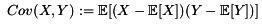
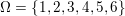

zettelkasten
Table of Contents
- 1 Zettelverwaltung
- 2 Webdesign
- 3 Elementare Stochastik
- 4 Theoretische Informatik
- 5 Softwaretechnik
- 6 Logik
- 7 Revive Sessions
- 8 Unterhaltung
- 9 Notes
1 Zettelverwaltung
1.1 Zettel8 Elementare Stochastik
1.2 Zettel10 Logik
1.3 Softwaretechnik
1.4 Zettel10 Theoretische Informatik
2 Webdesign
3 Elementare Stochastik
3.1 Englisch
| Deutsch | Englisch |
|---|---|
| Erwartungswert | expected value |
| exponentialverteilung | exponential distribution |
| Varianz | variance |
| gleichverteilung | uniform distribution |
| Irrfahrt | random walk |
| Wahrscheinlichkeitsdichte | random density |
| probapility density (function) | |
| Zufallsvariable | random variable |
3.2 Verteilungen
- Laplaceverteilung
zur Mitte hin, steigt die Wahrscheinlichkeit (exponentiell)
- Exponentialverteilung
In eine Richtung entgegen unendlich steigt die Wahrscheinlichkeit
- Binomialverteilung
Gibt nur 2 Ergebnisse, auf die die Wahrscheinlichkeit verteilt wird
- Poissonverteilung
zur Mitte hin, steigt die Wahrscheinlichkeit. (nicht exponentiell => runder kopf
3.3 Bedingter Erwartungswert
A,B Ereignisse; Y Zufallvariable \(P(A|B) = \frac{P(A \cap B)}{P(B)}\) Ws A wenn B bekannt \(P(Y|B) = \frac{E(1_{B} * Y)}{P(B)}\) <docview:~/Dropbox/st/s0.pdf::1>
3.4 Zusammenhänge
- Var(X) = Cov(X,X)
- Cov(X,Y) = E(X*Y) - E(X)E(Y)
3.5 Wörterbuch
- Erwartungswert
- = für Abwandlung relativer Häufigkeit: E(X[n])=z => E(X[n]/n)=z/n
- Zufallsvariable
- Abbildung wobei messbare Räume
- messbarer Raum
- existiert Abbildung Raum auf Maßraum
- Maßraum
- der Raum in den eine Maßfunktion zuordnet (z.B. 0..1 für Ws)
- Wahrscheinlichkeitsfunktion
- Wahrscheinlichkeitsdichtefunktion
- gibt zu ZVar und möglichen Output die Wahrscheinlichkeit an
- gleichverteilt
- alle outputs sind gleich wahrscheinlich
- Varianz
- = ( Standardabweichung) = irgend ein Maß für die mittleren Abweichungen vom Erwartungswert = = Bei Binomial mit n Versuchen: = n*p*(1-p) für Abwandlung relativer Häufigkeit: V(X[n])=z => V() =
- Kovarianz
-  = misst die zusammenhänge der Wert Cov(X,Y) = E(X*Y) - E(X)E(Y) Cov(X,Y) = Cov(Y,X) Cov(X+Y, Z) = Cov(X, Z) + Cov(Y, Z) entwicklung von X und Y, also hohe Werte von X => hohe Werte Y …
- Tschebyscheff-Ungleichung
- Mit Erwartungswert und Varianz werden Wahrscheinlichkeiten
für Werte < Erwartungswert bestimmt/eingegrenzt (minimale Wahrscheinlichkeit)
=
 σ2 ist varianz, μ ist Erwartungswert
σ2 ist varianz, μ ist Erwartungswert
- Wahrscheinlichkteisraum
- = Raum mit Ereignissen und Wahrscheinlichkeitsfunktion da drauf
- Indikator- / charakteristische Funktion
- 1T oder \mathcal{x}T wenn x in T 1 sonst 0
- Bayes - Theorem
- :
 und
und
3.6 Zettel-06
3.6.1 Dateien
3.6.2 Informationen
- Aufgabe 1
a) \(2^{-k}\binom{k}{(k+z)/2}\\\) = P(Sk = w) mit w aus Omegan \(2^{k}\) offensichtlich Anzahl der Blätter also auch Pfade Damit bestimmte Nummer erreicht wird, muss es entsprechend mehr '+1'er als '-1'er geben (k+z). (Um von k zu z zu kommen)b) Erwartungswert ist jedenfalls 0 darauf beschränken das es gerade sein muss, zB mit 2m als index oder so
c) Wahrscheinlichkeit für Rückker bei bei unendlich ist 1
 allgemein
allgemein
 bei Symmetrie
bei Symmetrie

\(\frac{n}{2}\) einser um Zustand zu halten (rest passt dann ja), und \(\frac{k}{2}\) um da ja aufgestiegen werden soll die müssen allen innerhalb des Pfades gezogen werden
- Aufgabe 3
 ==Wahrscheinlichkeit, für X >= x+t wenn X>= x schon bekannt==
==Wahrscheinlichkeit, für X >= x+t wenn X>= x schon bekannt==


3.7 Zettel-07
3.8 Zettel-08
<docview:~/Dropbox/st/st-zettel-08/st-zettel-08.pdf::1> st-loesung-08.tex
3.8.1 header
\documentclass[11pt]{amsart}
\usepackage[utf8]{inputenc}
\usepackage{amssymb,amsmath}
\usepackage{verbatim}
\usepackage{color}
\usepackage{geometry}
\geometry{a4paper,left=2cm,right=2cm, top=1.5cm, bottom=1.5cm}
\usepackage{amsthm}
\usepackage{stmaryrd}
\usepackage{graphicx}
%\includegraphics{?} setzt bild ein
%\ref{labelname} erstellt link zu labelname
%\label{labelname} kann einfach irgendwo drangesetz werden
\newtheorem{defi}{Definition}
\newtheorem{axiom}{Axiom}
\newtheorem{nota}{Notation}
\newtheorem{prop}{Proposition}
\newtheorem{satz}{Satz}
\newtheorem{umf}{Umformung}
\newenvironment{beweis}{\par\begingroup%
\settowidth{\leftskip}{\textsc{Beweis:~}}%
\noindent\llap{\textsc{Beweis:~}}}{\hfill$\Box$\par\endgroup}
\renewcommand{\baselinestretch}{1}
\newcommand{\words}{\Sigma^* \backslash \{\epsilon\}}
\newcommand{\etrans}[1]{\bar{\delta}(#1)}
\renewcommand{\P}{\mathbb{P}}
\title{Zettel 8}
\author{Florian Lerch(2404605)/Waldemar Hamm(2410010)}
%\date{} % Activate to display a given date or no date (if empty),
% otherwise the current date is printed
\begin{document}
\maketitle
3.8.2 Aufgabe 1
\subsection{Aufgabe 1}
- a)
\subsubsection{a)}Es gibt 32 Karten, 4 davon sind Buben Jeder der 3 Spieler erhält 10 Karten Die Wahrscheinlichkeit für einen Buben liegt bei 4/32 = 1/8 für jeden Kartenzug enthält die mögliche Anzahl Buben in einer Hand = {0,1,2,3,4} Man kann das ganze als Binomialverteilung interpretieren, wenn die Karten mit einem mal verteilt werden und jeder Spieler nur seine eigenen Karten kennt die Karten somit also unabhängig voneinander sind Als posititvis Ergebnis wird dabei das ziehen eines Buben und als negatvives Ergebnis wird das ziehen einer anderen Karte betrachtet. Es ergibt sich also für die Wahrscheinlichkeitsfunktion: , also alle Möglichkeiten () omega mal einen Buben zu ziehen () und bei allen anderen Zügen keinen ()
Der Raum $\Omega$ soll die Anzahl der Buben enthalten die ein Spieler jeweils in der Hand hält. Da es nur 4 Buben gibt, gilt also: $\Omega = \{0,1,2,3,4\}$. $\mathbb{P}: \Omega \rightarrow [0,1]$ soll nun also die Wahrscheinlichkeit dafür darstellen, dass ein Spieler die jeweilige Anzahl Buben in seinen 10 Karten besitzt. Bei 32 Karten und 4 Buben liegt die Wahrscheinlichkeit bei jeder einzelnen zugeteilten Karte bei $\frac{4}{32} = \frac{1}{8}$ dafür, dass es sich um einen Buben handelt.\\ Da die Karten alle direkt zugeteilt werden und wir nur die Wahrscheinlichkeit für alle 10 Karten zusammen betrachten, beeinflussen sich die einzelnen Karten in ihrer Wahrscheinlichkeit nicht wir können somit die Binomialverteilung für $\mathbb{P}$ verwenden.\\ Es ergibt sich somit: $\mathbb{P}(\omega) = \binom{10}{\omega}*(\frac{1}{8})^{\omega}*(\frac{7}{8})^{10-\omega}$ für $\omega \in \Omega$
- b)
\subsubsection{b)}Aus Sicht des jeweiligen Spielers befinden sich nun noch 4 - X Karten im Spiel. Für die Karten im Skat gilt daher das selbe Prinzip wie schon in a), d.h. Binomialverteilung. Für beide Karten liegt die Wahrscheinlichkeit dafür, dass es sich um einen Buben handelt, bei \frac{4-X}{32} und somit kann dann der Ereignisraum mit {0,1,2} definiert werden, und P(ω | X = k) = (\frac{4-X}{32})ω * (1 - \frac{4-X}{32})2 - ω
Aus Sicht des jeweiligen Spielers befinden sich nun noch 4 - X Karten im Spiel. Für die Karten im Skat gilt daher das selbe Prinzip wie schon in a), d.h. Binomialverteilung. \\ Sei $\Omega' = \{0,1,2\}$ und somit also die möglichen Anzahlen an Buben im Skat. \\ Analog zu a) ergibt sich für $\mathbb{P}(Y|X = k)$ nun mit für 2 Kartenziehungen und einer Wahrscheinlichkeit von $\frac{4-X}{32}$ für einen Buben pro Karte:\\ Für $\omega \in \Omega:$ $\mathbb{P}(Y = \omega |X = k) = \binom{32}{\omega}(\frac{4-X}{32})^{\omega} * (1 - \frac{4-X}{32})^{2 - \omega}$
- Notizen


3.8.3 Aufgabe 2
\subsection{Aufgabe 2}
Fairer Würfel 2 mal geworfen X = Augen erster Wurf Y = Maximum beider Augenzahlen bzw. Summe
- a)
Bedingte Wahrscheinlichkeit für Y mit X = k P(Y|X=k) d.h. die Wahrscheinlichkeit für die Unterschiedlichen möglichen Augen von Y, wenn k schon bekannt ist.Durch das gegebene X verschiebt sich lediglich der Raum der möglichen Ergebnisse für Y. Dabei wird aber keines dieser Ergebnisse wahrscheinlicher oder Unwahrscheinlicher.
Der Bildraum ist daher: [k,12-k] ∈ N
\subsubsection{a)} Ohne Betrachtung von X gilt zunächst: $Y$ bildet auf $[2,12] \subset N$ \\ Ferner biledet X auf $[1,6] \subset N$ ab, mit gleichen Wahrscheinlichkeiten der Werte, es gilt also: $P(X=x) = \frac{1}{6}$ für $x \in [1,6]$ \\ $\Rightarrow P(Y = y | X = k) = \frac{P(X=k , Y = y)}{P(X = k)} = \frac{P(X=k , Y = y)}{6}$ \\ $ = \begin{cases} \frac{1}{6} &\mbox{falls } k < y \leq 6+k \\ 0 &\mbox{sonst} \end{cases}$ \\
- b)
g(k) = E(Y | X = k) Der Erwartungswert für ein bestimmtes Y, bei gegebenem X. Abermals handelt es im im Grunde nur um eine simple Gleichverteilung der Wahrscheinlichkeiten in Y. Der Erwartungswert für z.B. X wäre: E[X] = 1/6 * 1 + 1/6 * 2 … = 1/6(1+2+3+4+5+6) = 21/6 = 3,5 Es ist anzunehmen, dass auch hier nur eine Verschiebung um k statt findet Test X=1 Ws für Y: 1/6(2+3+4+5+6+7) = 27/6 = 9/2 = 4,5 passt Test X=2 Ws für Y: 1/6(3+4+5+6+7+8) = 33/6 = 11/2 = 5,5 passt\subsubsection{b)} $g(k) := E[Y|X=k] = \sum_yy*P(Y=y | X = k) = \sum_{k < y \leq k+6}y*\frac{1}{6} = \frac{1}{6} * (k+1 + ... + k+6) = \frac{21}{6}*k = 3,5k$
- c)
E[Y] und E[g(X)]Für E[Y] ist die Summe des ersten Wurfes unbekannt. Aus diesem Grund, sind die einzelnen Ergebnisse nichmehr nur um eine Konstante verschoben und sind auch nicht mehr alle gleich wahrscheinlich. Die Ws Verteilung wird zur Mitte hin spitzer und sollte Symmetrisch sein, so dass 5,5 der Erwartungswert sein sollte. Stimmt nicht, die Symmetrie ist so gar nicht gegeben, da die 0 fehlt. Daher ist auch E[X] = 3,5 und nicht 3. Neuer Tipp: 7 Kann man Erwartungswerte vielleicht addieren? Eigentlich spricht nichts dagegen. E[X] = E[Z] = 3,5 Y als die Summe aus beidem ist daher 7.
E[g(X)] = Erwartungswert des Erwartungswertes? o.O
Was ist g(X)? g(k) := E(Y | X = k) g(X) = E(Y | X = X) oO = E(Y) ? das ist ja schon das andere
E[ 3,5 + k] <= würde nicht gehen bzw. wäre konstant da k konstant aber: E[3,5 + X] = 3,5 + E[X] <= wäre nicht unbedingt so machbar.
E[g(X)] = E[E(Y|X)] <=== wichtig, fest definiert
\subsubsection{c)} Sei Z die Augenzahl des 2. Wurfes, so das gilt Y = X+Z \\ $\Rightarrow E[Y] = E[X+Z] = E[X]+E[Z] = 3,5 + 3,5 = 7$ \\ $E[g(X)] = E[E(Y|X)] = E[\sum_yy*P(Y=y | X )] = \sum_x[\sum_yy*P(Y=y|X=x)]*P(X=x)$ \\ $= \sum_x\sum_yy*P(Y=y|X=x)*P(X=x) = \sum_yy*\sum_xP(Y=y, X=x) = \sum_yy*P(Y=y) = E(Y) = 7$ \\
3.8.4 Aufgabe 3
\subsection{Aufgabe 3}
- a)
\subsubsection{a)}- X, Y Zufallsvariablen -> aus ereignisraum in anderen raum
- => existiert also
- X2 <=> Quadrat der jeweiligen Outputs
E(X2) = ∑ω ∈ ΩX(ω)2P(X=X(ω))
E[X+Y] = ∑ω ∈ Ω(X(ω)+Y(ω))*P(ω)
Bekannt: E[X*X] = ∑ω ∈ Ω(X(ω)*X(ω))*P(ω) < ∞
=> Cov(X+Y, X-Y) = E[ (X+Y) * (X-Y) ] - E(X+Y)E(X-Y) = E[ X2 - Y2 ] - E(X+Y)E(X-Y)
= E[ ([X+Y]-E[X+Y]) * ([X-Y] - E[X-Y]) ] = E[ [X+Y][X-Y] - [X+Y]E[X-Y] - E[X+Y][X-Y] + E[X+Y]E[X-Y] ] = E[ X2 - Y2 - (E[X-Y]X + E[X-Y]Y) - (E[X+Y]X - E[X+Y]Y) + E[X+Y]E[X-Y] ] = E[ X2 - Y2 - E[X-Y]X - E[X-Y]Y - E[X+Y]X + E[X+Y]Y + E[X+Y]E[X-Y] ]
=> Cov(X+Y, X-Y) = Cov(X,X-Y) + Cov(Y,X-Y) = Cov(X-Y,X) + Cov(X-Y, Y) = Cov(X,X) - Cov(Y,X) + Cov(X,Y) - Cov(Y,Y) = Cov(X,X) - Cov(Y,Y) = Var(X) - Var(Y) = 0 (da gleichverteilt)
Da X und Y gleichverteilt sind, gilt: $Var(X) = Var(Y) \rightarrow Var(X) - Var(Y) = 0$\\ Durch die symmetrie der Kovarianz lässt sich umformen:\\ $Cov(X+Y, X-Y) = Cov(X,X-Y) + Cov(Y,X-Y) = Cov(X-Y,X) + Cov(X-Y, Y) = Cov(X,X) - Cov(Y,X) + Cov(X,Y) - Cov(Y,Y)$\\ $ = Cov(X,X) - Cov(Y,Y) = Var(X) - Var(Y) = 0$
- b)
\subsubsection{b)}Für Unabhängigkeit müsste gelten: $\mathbb{P}([X+Y]*[X-Y]) = \mathbb{P}(X+Y)*\mathbb{P}(X-Y) \Leftrightarrow \mathbb{P}(X^2 - Y^2) = \mathbb{P}(X+Y)*\mathbb{P}(X-Y)$ \\ Es gelte $\mathbb{P}(z) = \begin{cases} 1 &\mbox{falls } z=-1 \\ 0 &\mbox{sonst} \end{cases}$ \begin{tabbing} Sei X = 0 und Y = 1 \=$\Rightarrow \mathbb{P}(X^2-Y^2) = \mathbb{P}(-1) = 1$ \\ \> $\Rightarrow \mathbb{P}(X+Y)*\mathbb{P}(X-Y) = \mathbb{P}(1)*\mathbb{P}(-1) = 0*1 = 0 \not = 1$ \end{tabbing} $\Rightarrow$ in diesem Beispiel sind die Zufallsvariablen X+Y und X-Y zwar unkorelliert (Kovarianz ist 0) aber nicht unabhängig.
- Lösung Wikipedia:

3.8.5 Aufgabe 4
\subsection{Aufgabe 4}
- a)
\subsubsection{a)}n = Anzahl Würfel Sn = Anzahl Erfolge (1 gewürfelt) Ws für Erfolg = 1/5 Würfel haben kein Gedächtnis -> binomialverteilung mit 1/5 erfolg und 4/5 misserfolg
P[|\frac{Sn}{n} - \frac{1}{5}| < ε] \geq 1 - \frac{σ2}{ε2}
 Ω = \{1, 2, 3, 4, 5, 6\} E[X2] = ∑ω1, ω2, ω3
Sn = Anzahl der einser bei den Würfen, und n = Anzahl der Würfel => sollte ergeben, bzw. dorthin streben
V(X) = E([X - E(X)]2) = E([X-\frac{1}{5}]2) = E(X2 - 2 \frac{X}{5} + \frac{1}{25})
Var(X) = 1/5 * 4/5 * n = 4n/25
P[|\frac{Sn}{n} - \frac{1}{5}| < ε] \geq 1 - \frac{4n}{25 * ε2}
Die Wahrscheinlichkeit für einen erfolgreichen Wurf (eine 1) liegt bei $\frac{1}{5}$ und für einen nicht erfolgreichen Wurf (ungleich 1) somit bei $1 - \frac{1}{5} = \frac{4}{5}$ \\ Da die einzelnen Würfe keinen Einfluss aufeinander nehmen und jeder Wurf klar in Erfolg und Misserfolg getrennt werden kann, lässt sich die Varianz der Normalverteilung verwenden, und es ergibt sich: \\ $Var(S_n) = n * \frac{1}{5} * \frac{4}{5} = \frac{4n}{25}$ \\ $\Rightarrow Var(\frac{S_n}{n}) = \frac{4}{25n}$ \\ Für den Erwartungswert gilt aufgrund der Binomialverteilung: $E(S_n) = \frac{n}{5}$ \\ $\Rightarrow E(\frac{S_n}{n}) = \frac{1}{5}$ \\ Eingesetzt in die Ungleichung ergibt sich somit: $P[|\frac{S_n}{n} - \frac{1}{5}| < \epsilon] \geq 1 - \frac{4}{25n * \epsilon^2}$- Analoge Lösung mit Münze(a)
Münze positiv oder negativ, analog zu den möglichen Ergebnissen des Würfels (1 oder nicht 1)
- Analoge Lösung mit Münze(a)
- b)
\subsubsection{b)}e = 0,001 Wie viele Würfe n nötig, damit Ws > 0.95
Eingesetzt:
ges: 1 - \frac{4}{25n * 0.0012} > 0.95 <=> 1 - \frac{4}{0.000025n} > 0.95 => 1 - 0.95 > \frac{4}{0.000025n} => 0.05 > \frac{4}{0.000025n} => 0.05 > \frac{4000000}{25n} => 0.05 > \frac{1}{160000n}
0.05 = \frac{1}{160000n} 0.05 = \frac{1}{n} * \frac{1}{160000} => 80000 = \frac{1}{n} => n = \frac{1}{80000}
Es soll gelten: $1 - \frac{4}{25n * 0.000001} > 0.95$ \\ $\Leftrightarrow 1-0.95 > \frac{4}{25n * 0.000001}$ \\ $\Leftrightarrow 0.05 > \frac{160000}{n}$ \\ $\Leftrightarrow n > 3 200 000$
3.8.6 Aufgabe 5
\subsection{Aufgabe 5}
- a)
\subsubsection{a)}Berechnen Sie:
- 1
- Wo steht das Auto
- 2
- Welche Tür wählt der Kandidat
- 3
- Welche Tür öffnet der Showmaster daraufhin
Insgesamt existieren 3 * 3 * 3 = 27 Mögliche Kombinationien Sei j = 1 (für jede andere Zahl gleich): (1,1,2) , (1,1,3) , (1,2,3), (1,3,2) => |Gj| = 4 Möglichkeiten, bei 2 Erfolg => 1/2 für erfolg gleich bleiben Sei k = 1: (1,1,2) , (1,1,3) , (2,1,3) , (3,1,2) => |Wk| = 4 , bei 2 Erfolg
Sei l = 1: (2,2,1) , (2,3,1), (3,2,1) , (3,3,1) => |Ml| = 4, bei 2 ErfolgWk = 4 Mit einer Wahrscheinlichkeit von 2/4 konnte der Moderator frei entscheiden, welche Tür er wählt => tür richtig Mit einer Wahrscheinlichkeit von 2/4 musste er eine bestimmte Tür nehmen => tür falsch
Fall 1: auto getroffen => es existieren 2 andere Möglichkeiten für den Moderator, eine Tür zu wählen Fall 2: auto nicht getroffen => es existiert nur eine andere Möglichkeit für den Moderötor, eine Tür zu wählen => Ws 2/3 das man das Auto vor der Wahl des Moderators nicht getroffen hatte


P(Ai|B) = \frac{P(Ai) * P(B | Ai)}{P(A1) * P(B | A1) + P(A2) * P(B | A2) + P(A3) * P(B | A3)}
Gesucht: => Ws dass hinter j das Auto steckt, wenn wir k gewählt haben, und der Moderator Tür l geöffnet hat
Anwendung Bayes = \frac{\frac{1}{3} * P( Wk ∩ Ml | Gj)}{…}
Für festes j bleiben noch 9 (= 3*3) mögliche Elemente aus Omega,
Der Moderator darf nur Türen wählen, die nicht ungleich j sind bleiben noch 6 (= 3*2) Zustände (1,1,2),(1,1,3),(1,2,2),(1,2,3),(1,3,2),(1,3,3) Da darüber hinaus der Moderator aber auch nur Türen wählen kann, die ungleich k sind, bleiben noch 4 (= 2*2) Zustände (1,1,2),(1,1,3),(1,2,3),(1,3,2)
Folglich ist P( Wk ∩ Ml | Gj) = \frac{4}{9}
$G_j = \{ (j,\omega_2,\omega_3) | \omega_2 \in \{ 1,2,3 \}, \omega_3 \in \{ 1,2,3 \} \backslash \{ j , \omega_2 \} \}$ \\ $= \{ \omega \in \Omega | \omega_1 = j \wedge \omega_3 \not = j \wedge \omega_3 \not = \omega_2\ \wedge \omega_3 \not = j \}$ \\ $W_k = \{ ( \omega_1 , k , \omega_3 ) | \omega_1 \in \{ 1,2,3 \} , \omega_3 \in \{ 1, 2, 3 \} \backslash \{\omega_1 , k \} \}$ \\ $= \{ \omega \in \Omega | \omega_2 = k \wedge \omega_3 \not = k \wedge \omega_3 \not = \omega_1 \wedge \omega_3 \not = k \}$ \\ $M_l = \{ ( \omega_1 , \omega_2 , l ) | \omega_1 \in \{ 1,2,3 \} \backslash \{ l \} , \omega_2 \in \{ 1, 2, 3 \} \backslash \{ l \} , l \}$ \\ $= \{ \omega \in \Omega | \omega_1 \not = l \wedge \omega_2 \not = l \wedge \omega_3 = l \}$ \\ $W_k \cap M_l = \{ (\omega \in \Omega | \omega_1 \not = l , \omega_2 = k \not = l, \omega_3 = l \}$ \\ $P(G_j | W_k \cap M_l , 1 \leq j,k,l \leq 3 ) = \frac{P(W_k \cap M_l) * P(G_j)}{P(W_k \cap M_l)}$ \\ p(W_k \cap M_l | G_j ) = \begin{cases} \frac{ &\mbox{falls } k=j \\ 0 &\mbox{sonst} \end{cases} = $\frac{P(W_k \cap M_l | G_j ) * \frac{1}{3}} {P(W_k \cap M_l)}$ P(G_j) = 1/3 P( bla
- b)
\subsubsection{b)}- Bäume


- Bäume
- c)
\subsubsection{c)}
3.8.7 Aufgabe 6
- Cancer Rate


- nochmal mit Aids


- Sterbetafeln

3.8.8 footer
\end{document}
3.9 Zettel-09
3.10 Zettel-10
3.11 Zettel-11
4 Theoretische Informatik
4.1 Zettel-09
4.2 Zettel-10
4.3 Zettel-11
4.4 Zettel-12
4.5 Zettel-13
5 Softwaretechnik
5.1 Hausaufgabe03
so-hausaufgabe-03.pdf Tester.java
- Server erstellen
- strings mit instanzen von Servlets beim Server "registrieren"
- beispielaufrufe an Server weitergeben
- irgend ein interner quark
- parameter aus url extrahieren
- process von servlets aufrufen
- process befehl mit parametern ausführen
5.1.1 Aufgabe B
- 1.
Hier finden vor allem das Template Method und das Strategy Pattern Anwendung. Das Template Pattern erkennt man in der Regel ja schon schnell an den Interfaces. Hier ist es das Interface IServlet. Die einzelnen Servlets orientieren sich dabei nur an den durch das Template Pattern vorgegebenen Schnittstellen, also sowohl Funktions Out- als auch Input. Die eigentliche Funktionsweise des Servers ist dem Entwickler der Servlets egal. Auf der anderen Seite beschäftigt sich auch der Server kaum mit den konkreten Servlets, da er lediglich ihr Template implementiert und benutzt und sich dabei darauf verlässt, dass die jeweiligen Servlets diesen Schnittstellen gerecht werden.Das Strategy Pattern ergibt sich aus dem Umstand, das die eigentlichen Servlets an und für sich austauschbar sind. Da sie alle auf das selbe Interface reagieren und der Server im Grunde auch nur dieses Interface implementiert hat, sind die einzelnen Servlets problemlos austauschbar, oder - wie im F. Der Lösung dieser Aufgabe entspricht das Decoratorpattern. Das kombinierende Servlet würde an die einzelnen Servlets nicht all vom CombiningServlets - sogar miteinander kombinierbar, ohne dass sie dafür extra angepasst werden müssten.
- 2.
Der Lösung dieser Aufgabe entspricht das Decoratorpattern. Das kombinierende Servlet würde an die einzelnen Servlets nicht direkt den Output vom Server weitergeben, sondern jeweils einen selbst definierten Stream, welcher dann am Ende der beiden einzelnen Servlets in den "richtigen" Outputstream vom Server fließen würde. Der Server selbst bekommt von dieser Umstellung nichts mit. Der Server übergibt nach wie vor sein Streamobjekt welches dann mit dem Output der beiden Servlets gefüllt wird. Aus diesem Grund handelt es sich dann beim CombiningServlet um einen Decorator.
5.1.2 Aufgabe B
bla bla
- Subheading
nochmehr bla
6 Logik
6.1 Zettel-08
6.1.1 Dateien
6.1.2 Informationen
- Ideal
- Teilmenge I von Bool-Algebra
- wenn x,y in I dann auch x v y in I
Maximal: kein anderes echtes Ideal von dem I ne echte Teilmenge jedes ideal von dem I ne echte Teilmenge, ist
6.2 Zettel-09
6.3 Zettel-10
6.4 Zettel-11
6.5 Zettel-12
6.6 Zettel-13
7 Revive Sessions
- 1
- Elementare Stochastik Zettel 8
8 Unterhaltung
8.1 The Watch - Nachbarn der 3. Art

Als einer seiner Mitarbeiter grausam ermordet wird, beschließt der gewissenhafte Warenhaus-Manager Evan eine Bürgerwehr zu organisieren. Lediglich drei Männer melden sich. Die sind jedoch hauptsächlich daran interessiert, Bier zu trinken und sich zu amüsieren. Doch seine Mitstreiter haben ein jähes Erwachen, als sie einem leibhaftigen Alien begegnen. Nun liegt es an der allseits verlachten Selbstschutz-Gruppe die Welt vor einer Invasion blutrünstiger Körperfresser zu bewahren.
8.2 Der Hobbit - Eine unerwartete Reise
 Bilbo Beutlin ist ein ganz einfacher Hobbit, der in Hobbingen im Auenland seinem Tagesgeschäft nachgeht. Bis er von dem Zauberer Gandalf auf den Plan gerufen wird. Zusammen mit einer Gruppe von 13 Zwergen unter Führung des legendären Kriegers Thorin zieht der Halbling los, um dem Drachen Smaug das verlorene Zwergenreich Erebor zu entreißen. Unterwegs treffen sie auf Goblins und Orks, Wargs, riesige Spinnen und Zauberer. Und eine bemitleidenswerte Kreatur, die auf den klingenden Namen Gollum hört.
Bilbo Beutlin ist ein ganz einfacher Hobbit, der in Hobbingen im Auenland seinem Tagesgeschäft nachgeht. Bis er von dem Zauberer Gandalf auf den Plan gerufen wird. Zusammen mit einer Gruppe von 13 Zwergen unter Führung des legendären Kriegers Thorin zieht der Halbling los, um dem Drachen Smaug das verlorene Zwergenreich Erebor zu entreißen. Unterwegs treffen sie auf Goblins und Orks, Wargs, riesige Spinnen und Zauberer. Und eine bemitleidenswerte Kreatur, die auf den klingenden Namen Gollum hört.
8.3 Otto's eleven

Nicht nur im Titel angelehnt an Steven Soderberghs Ocean’s Eleven, versucht sich Otto Waalkes in seinem neuesten Film Otto’s Eleven am Heist-Genre. Die Geschichte spielt auf der Insel Spiegeleiland, einem kleinen Stückchen Erde welches von nur fünf Insulanern bewohnt wird. Die ausschließlich aus Männern bestehende Gruppe setzt sich aus Maler Otto, Kabeljaukoch Pit, Fitnessfreak Mike, Modeliebhaber Oskar und IT-Experten Artur zusammen. Die Gruppe entschließt sich zu dem folgenschweren Schritt, mit Hilfe eines Online-Werbe-Videos, die Tourismusbranche auf Spiegeleiland ins Rollen zu bringen. Anstelle eines Urlauberansturms wird die winzige Insel jedoch vom fiesen Casinobesitzer und Kunstsammler Jean du Merzac heimgesucht. Dieser schafft es mit Hilfe eines arglistigen Tricks ein äußerst wertvolles Gemälde aus Ottos Familienbesitz zu ergaunern. Die fünf Freunde entschließen sich zu einer Vergeltungsaktion mit der sie das Kunstwerk wieder zurück erobern wollen. Zusammen mit der Verstärkung von sechs neuen Verbündeten sind Otto’s Eleven somit geboren. Otto Waalkes, der mit seiner 7 Zwerge – Männer allein im Wald – Reihe wieder an alte Kassenerfolge anknüpfen konnte, setzt in seinem neuesten Abenteuer auf bewährte Kräfte. Mit Regisseur Sven Unterwaldt Jr. und Produzent Mark Popp arbeitete Waalkes schon bei seinen letzten beiden Filmen zusammen. Wie in fast jedem Otto-Film, gibt es auch in Otto’s Eleven einige prominente Gastrollen: So gibt Germany’s Next Topmodel-Siegerin Sara Nuru ihr Filmdebüt neben Filmgrößen wie Olli Dittrich, Sky Dumont und Jasmin Schwiers. In seinem ersten großen Kinofilm ist Switch Reloaded – Star Max Giermann zu sehen, der sich in den letzten Jahren in der deutschen Comedy-Szene eine Namen machen konnte. Neben Giermann und Waalkes sind mit Mirco Nontschew und Rick Kavanian zwei Comedy-Urgesteine in weiteren Hauptrollen zu sehen. (BL)
9 Notes
Shell Command Output (lgrep "-key" "home/florian.emacs") (setq debug-on-error t)
cooles bild oder so